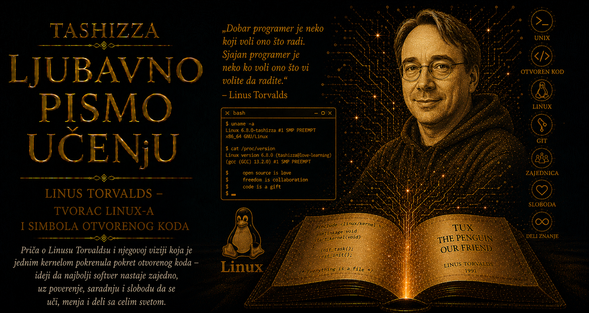

Ljubavno pismo učenju

Linus Benedikt Torvalds rođen je 28. decembra 1969. godine u Helsinkiju, u porodici čiji je život bio prožet novinarstvom, književnošću, politikom i javnim raspravama. Njegovi roditelji, Nils i Ana Torvalds, pripadali su švedskojezičkoj manjini u Finskoj, a ime je dobio po američkom hemičaru Linusu Polingu. Porodično okruženje bilo je intelektualno podsticajno, ali i ispunjeno snažnim karakterima i ideološkim uverenjima. Linus se rano povlačio iz sveta glasnih društvenih razgovora prema matematici i računarima, gde su tvrdnje morale da izdrže proveru i gde se složeni problemi mogu razložiti na korake koji imaju vidljive posledice.
Njegov deda sa majčine strane, Leo Tornkvist, bio je profesor statistike na Univerzitetu u Helsinkiju i posedovao je računar Commodore VIC-20. Linus je kao dečak posmatrao dedu kako unosi programe i ubrzo počeo da mu pomaže, najpre zapisujući jednostavne naredbe, a zatim istražujući šta se događa kada promeni njihov redosled ili vrednosti. Računar mu je pružio neposredan odnos između zamisli i rezultata: mašina nije bila impresionirana samouverenošću, uzrastom ni položajem onoga ko joj se obraća, već je izvršavala upravo ono što joj je zadato. Ta stroga doslednost privukla je dečaka koji se među ljudima često osećao nespretno i izdvojeno.
Posle VIC-20 dobio je Sinclair QL, računar čije je mogućnosti istraživao daleko izvan onoga što je proizvođač namenio prosečnom korisniku. Proučavao je asemblerski jezik, menjao postojeće programe, pisao sopstvene alate i pokušavao da razume vezu između softvera i hardvera. Umesto zadovoljavanja površnim korišćenjem, želeo je da stigne do najdubljeg sloja sistema i sazna zbog čega određena naredba daje određeni rezultat. Takva radoznalost postala je trajno obeležje njegovog rada: uređaj je za njega postajao zanimljiv onda kada je mogao da ga rastavi u mislima i ponovo sastavi kroz kod.
Na Univerzitet u Helsinkiju upisao se 1988. godine, a studije je prekinuo zbog obaveznog vojnog roka, tokom kojeg je prošao obuku za rezervnog oficira i artiljerijskog osmatrača. Vojni sistem, sa jasnom hijerarhijom, fizičkim naporom i precizno podeljenom odgovornošću, nalazio se daleko od njegovog prirodnog sveta, ali mu je pokazao da disciplina može biti podnošljiva kada pravila imaju razumljivu svrhu. Kasnije će u vođenju Linuxa zadržati odbojnost prema ceremonijalnom autoritetu, istovremeno gradeći veoma čvrstu strukturu tehničkog odlučivanja.
Po povratku na univerzitet ozbiljnije se susreo sa Unixom na računaru DEC MicroVAX. Privukla ga je kultura malih, jasno usmerenih programa koji se mogu povezivati i zajednički obavljati složene poslove. Početkom 1991. kupio je računar sa procesorom Intel 80386, veoma skup za studentske prilike, pa ga je otplaćivao narednih godina. Na njemu je koristio MINIX profesora Endrua Tanenbauma i postepeno počeo da razvija sopstveni sistem, vođen željom da potpuno iskoristi mogućnosti procesora i dobije okruženje koje će moći svakodnevno da koristi.
Linusova studentska soba postala je mala laboratorija u kojoj nije postojala jasna granica između učenja, igre i stvaranja. Počeo je od prebacivanja između procesa i programa za povezivanje sa univerzitetskim računarima, a zatim se spuštao sve dublje prema memoriji, diskovima i sistemskim funkcijama. Niko mu nije zadao taj projekat, nije imao poslovni plan, investitore ni tim koji očekuje rezultat. Imao je dovoljno vremena, pristup znanju, računar koji ga je izazivao i okruženje koje mu je dopuštalo da mesecima radi na nečemu bez neposredne ekonomske koristi.
Kada je 25. avgusta 1991. godine korisnicima MINIX-a poslao poruku o sistemu koji razvija, predstavio ga je kao hobi koji verovatno neće postati veliki i profesionalan. U toj proceni bilo je iskrene skromnosti, karakterističnog humora i svesti o sopstvenim ograničenjima. Nije raspolagao razlogom da očekuje pažnju izvan malog kruga tehničkih entuzijasta. Ipak, učinio je ono što će presudno oblikovati njegov život: pokazao je nedovršen rad, zatražio mišljenje drugih ljudi i prihvatio mogućnost da će njihov doprinos promeniti smer projekta.
Sistem u početku nije trebalo da se zove Linux. Torvalds je razmatrao naziv Freax, sastavljen od asocijacija na slobodu, neobičnost i Unix, jer mu je imenovanje projekta po sebi delovalo previše samoljubivo. Ari Lemke, administrator univerzitetskog FTP servera na koji je kod postavljen, smatrao je da taj naziv nije dobar i direktorijum je nazvao Linux. Ime koje je njegov tvorac u početku izbegavao ubrzo je postalo poznatije od svega što je mogao da predvidi.
U ranim godinama razvoja posebno se pokazala Torvaldsova sposobnost da čita tuđi kod i procenjuje njegovo mesto u široj celini. Programerske izmene doživljavao je gotovo kao što muzičar prepoznaje odnos tonova: brzo je uočavao suvišan sloj, skrivenu pretpostavku, buduću poteškoću ili jednostavniji put do istog rezultata. Njegov položaj među saradnicima izrastao je iz sposobnosti da razume njihove doprinose i sačuva koherentnost projekta koji je svakoga dana postajao složeniji.
Početkom 1992. godine ušao je u poznatu javnu raspravu sa Endruom Tanenbaumom o arhitekturi operativnih sistema. Tanenbaum je branio mikrojezgra kao čistiji, prenosiviji i teorijski napredniji pristup, dok je Torvalds branio monolitno jezgro koje je već radilo na hardveru kojim je raspolagao. Njegov odgovor bio je oštar, ali je otkrivao duboku odanost praktičnoj proveri. Kasniji razvoj nije obesmislio mikrojezgra, ali je pokazao da Linux može postati modularan, prenosiv i sposoban da se razvija na velikom broju arhitektura. Torvalds je iz takvih sukoba učvrstio uverenje da elegantna teorija svoju vrednost potvrđuje tek u susretu sa stvarnom upotrebom.
Privatni život počeo je da se menja dok je na univerzitetu držao računarske vežbe. Studentima je zadao da mu pošalju elektronsku poruku kako bi pokazali da su savladali postupak, a Tove Moni, višestruka finska šampionka u karateu, iskoristila je zadatak da ga pozove na sastanak. Među tehničkim odgovorima pojavila se poruka koja je otvorila drugačiji deo njegovog života. Venčali su se i dobili tri ćerke, a porodica mu je pružila ravnotežu prema projektu koji je mogao da zauzme svaki trenutak.
Tove je u njegov život unosila neposrednost, fizičku snagu i praktičnu ukorenjenost, dok je Linus najveći deo vremena provodio u apstraktnom svetu koda. Radio je od kuće i nastojao da učestvuje u odrastanju dece, odbijajući predstavu da stvaralac važnog sistema mora žrtvovati sve druge odnose sopstvenoj misiji. U kernelu je ostavio i male porodične tragove: datumi rođenja njegovih ćerki povezani su sa vrednostima u sistemskom pozivu za ponovno pokretanje računara. Takvi detalji pokazuju da je čak i najstroži tehnički kod za njega ostajao ljudsko delo, otvoreno humoru, igri i privatnom sećanju.
Pingvin Tux postao je zaštitni znak Linuxa sredinom devedesetih godina. Torvalds je voleo pingvine i rado prepričavao susret sa malim pingvinom koji ga je ugrizao tokom posete zoološkom vrtu u Australiji. Kada se tražio simbol projekta, više mu je odgovarala slika zadovoljnog, pomalo zaobljenog pingvina nego pompezni znak tehnološke moći. Lari Juing nacrtao je Tuxa u tom duhu, pa je simpatična maskota postala izraz Torvaldsovog humora i otpora prema preterano ozbiljnoj slici revolucionarnog vođe.
Godine 1997. preselio se sa porodicom u Kaliforniju i zaposlio u kompaniji Transmeta, koja je razvijala procesore sa neuobičajenim pristupom izvršavanju instrukcija. Preseljenje ga je približilo središtu američke tehnološke industrije, ali Linux nije postao vlasništvo njegovog poslodavca niti osnova lične korporativne imperije. Torvalds nije želeo ulogu izvršnog direktora koji upravlja kompanijom podignutom oko sopstvenog izuma. Zadržao je tehničko vođstvo i zaštitni znak, dok je poslovni prostor oko Linuxa ostao otvoren različitim kompanijama, distribucijama i zajednicama.
Njegova moć zato se razlikovala od moći većine slavnih tehnoloških osnivača. Nije počivala na vlasništvu nad proizvodom, velikom paketu deonica ili pravu da zaposlenima izdaje naređenja. Proisticala je iz poverenja da ume da čuva kvalitet glavnog razvojnog stabla. Svaki saradnik mogao je da preuzme kod i razvije drugačiju granu, pa je Torvaldsov autoritet morao neprestano da se potvrđuje kvalitetom tehničkog suda. Njegov položaj bio je veoma snažan, ali je ostajao zavisan od toga da ljudi dobrovoljno prihvataju njegove odluke.
Torvalds je otvoreno govorio da saradnike u velikim projektima pokreću različite pobude. Neko želi da reši sopstveni problem, neko da nauči, stekne ugled ili uživa u intelektualnom izazovu, dok kompanija može ulagati zato što joj je određena funkcija poslovno potrebna. Smatrao je da uspešan sistem ne zahteva moralnu savršenost učesnika, nego pravila koja njihove različite interese mogu pretvoriti u zajedničku korist. Programer koji pravi podršku za svoj uređaj može pomoći hiljadama nepoznatih korisnika, a kompanija koja rešava sopstveni problem može poboljšati kernel koji koriste i njeni konkurenti.
Taj odnos prema radu sažeo je u zamisli da ljudske pobude napreduju od opstanka, preko društvenog položaja, prema zabavi. „Zabava” u njegovom jeziku označava duboko zadovoljstvo koje nastaje kada čoveka pokreću radoznalost, stvaralaštvo i izazov. Naslov autobiografije Just for Fun čuva upravo tu ideju. Linux je započeo kao rad kojem se posvetio zato što mu je bio intelektualno uzbudljiv, a takva posvećenost pokazala se dovoljno snažnom da privuče ljude sa različitih kontinenata i iz veoma različitih sredina.
Kada je razvoj kernela prerastao alate kojima je zajednica upravljala izmenama, Torvalds je 2005. godine započeo razvoj Gita. Prekid mogućnosti besplatnog korišćenja vlasničkog sistema BitKeeper ostavio je projekat bez sredstva sposobnog da prati veliki broj paralelnih grana, sačuva istoriju i brzo poveže rad hiljada ljudi. Torvalds je zahteve za novi alat izvukao iz iskustva održavanja kernela: Git je morao biti brz, distribuiran, pouzdan i sposoban da proverava integritet istorije projekta.
Prve upotrebljive verzije nastale su za veoma kratko vreme, a dalje održavanje projekta preuzeo je Junio Hamano sa širom zajednicom saradnika. Git je zatim postao jedan od najrasprostranjenijih alata za razvoj softvera. I njegova arhitektura nosi Torvaldsov pogled na saradnju: svaki programer može imati celovitu istoriju projekta, raditi samostalno, razvijati sopstvenu granu i kasnije povezati izmene sa radom drugih ljudi. Kao i Linux, Git je nastao iz konkretnog problema, a zatim prerastao potrebe svog prvog korisnika.
Uz tehničku pronicljivost išao je i temperament koji je decenijama opterećivao zajednicu. Torvaldsove poruke umele su da budu duhovite, sažete i izuzetno precizne, ali su često sadržavale uvrede, psovke i javno ponižavanje autora čiji je kod smatrao nepažljivim. Verovao je da ozbiljnost posledica opravdava krajnje neposredan govor, jer greška u kernelu može ugroziti podatke i rad miliona uređaja. Granica između strogog suda o kodu i napada na čoveka ipak se često gubila, pa su neki saradnici odustajali od učešća ili zaključivali da tehničkoj zajednici ne mogu pripadati bez pristajanja na poniženje.
Godine 2018, posle nesporazuma oko termina skupa održavalaca i preispitivanja sopstvenih reakcija, Torvalds je javno priznao da njegovo ponašanje nije bilo profesionalno. Izvinio se ljudima koje je povredio ili udaljio iz razvoja i privremeno se povukao kako bi naučio da drugačije upravlja svojim odgovorima. Linux zajednica je u isto vreme usvojila kodeks ponašanja, čime je odnos prema ljudima dobio jasnije mesto uz tehničku odgovornost.
Njegovo priznanje imalo je posebnu težinu jer je dolazilo od čoveka čiji se javni identitet godinama oslanjao na beskompromisno izgovaranje sopstvenog suda. Nije napustio visoke standarde niti izgubio sposobnost da odlučno odbaci loše rešenje. Prihvatio je da tačnost argumenta ne daje pravo na svaki način obraćanja i da vođa svojim ponašanjem oblikuje granice čitave zajednice. Njegov lični razvoj time je postao deo razvoja Linuxa: održavanje velikog projekta zahteva popravljanje koda, procesa i sopstvenih navika.
Iza javne slike oštrog održavaoca nalazi se čovek koji je godinama tražio miran ritam porodičnog života. Radio je iz kućne kancelarije, voleo ronjenje i iz sopstvene potrebe učestvovao u stvaranju slobodnog programa Subsurface za vođenje dnevnika zarona. Čak i posle globalnog uspeha ostao je privučen konkretnim problemima koji se mogu rešiti programiranjem. Slava ga nije udaljila od osnovnog zadovoljstva koje je upoznao kao dečak pred prvim računarom: od trenutka kada ideja postane kod i počne da radi.
Torvaldsova dalekovidost imala je neuobičajen oblik. Nije unapred predvideo Android, svetsku mrežu održavalaca, Linux na superračunarima, ogromno tržište distribucija niti Git kao opšti alat programerske kulture. Umeo je da veoma pažljivo posmatra problem pred sobom, napravi upotrebljiv početak, objavi ga dovoljno rano i zatim prepozna dobar smer kada ga doprinosi drugih učine vidljivim. Budućnost njegovih projekata nastala je iz hiljada praktičnih odluka, ispravki i promena pravca.
Njegova priča pokazuje koliko se autoritet razlikuje od autoritarnosti. Torvalds je imao završnu reč u glavnom razvojnom stablu, ali je njegova moć zavisila od znanja, poverenja i mogućnosti drugih ljudi da izaberu drugačiji put. Kada je tehnički autoritet pokušavao da se potvrdi grubošću, zajednica je gubila saradnike; kada se vraćao argumentu, odgovornosti i kvalitetu rada, postajao je oslonac zajedničkog stvaranja. Čovek može biti izuzetno sposoban u razumevanju složenih mašina, a da tek mnogo kasnije nauči koliko su složene posledice njegovih reči.
Linux se često opisuje kao pobeda zajednice, što ne umanjuje Torvaldsovu ulogu. Veliki broj doprinosa može proizvesti nepovezanu gomilu jednako lako kao skladnu celinu, pa su potrebni kriterijumi, struktura poverenja i ljudi spremni da preuzmu odgovornost za teške odluke. Torvaldsov doprinos obuhvatao je sposobnost da započne projekat, otvori ga drugima, raspodeli znanje i istovremeno sačuva njegovo središte dovoljno čvrstim da se hiljade promena mogu povezati.
Poruka iz avgusta 1991. godine zato ostaje najlepša slika njegovog stvaralačkog karaktera. Student sa računarom kupljenim na otplatu pokazao je nepoznatim ljudima rad pun ograničenja i pitao ih šta bi želeli da vide u njemu. Mogao je da čeka savršenstvo, da se zaštiti od kritike ili da zaključi kako njegov kod još nije dostojan javnosti. Izabrao je razgovor, proveru i saradnju.
Linus Torvalds promenio je digitalni svet tako što je napravio dovoljno dobar početak i dopustio drugima da ga nastave. Njegov život podseća da veliko delo ne mora nastati iz savršenog plana, niti njegov autor mora posedovati sva potrebna znanja. Ponekad su dovoljni duboka radoznalost, istrajnost pred sledećim problemom i velikodušnost da se vrata otvore ljudima koji vide drugačije, znaju nešto što mi još ne znamo i mogu zajedno sa nama pronaći bolje rešenje.